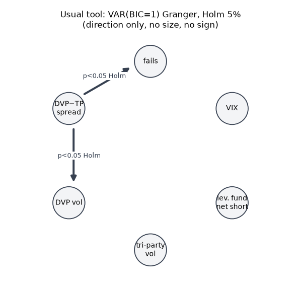
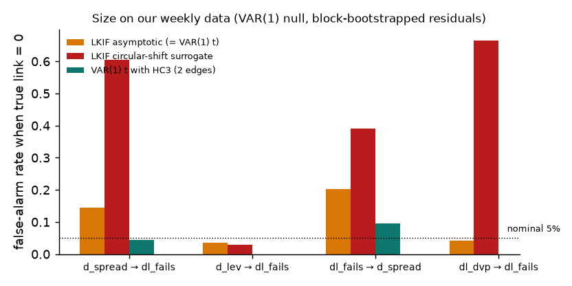
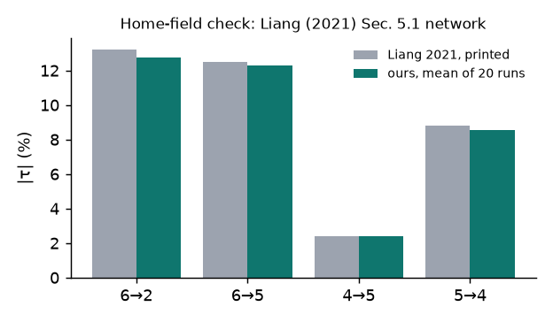
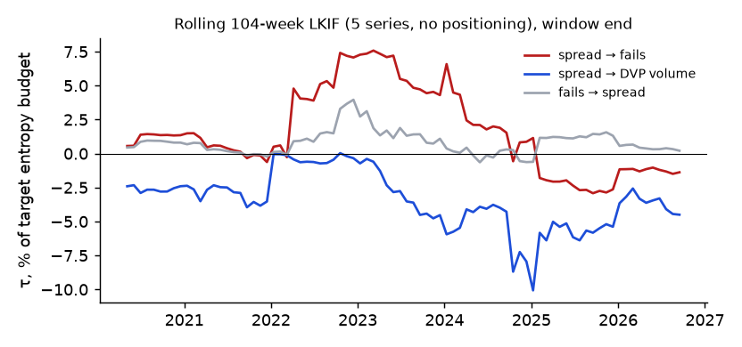
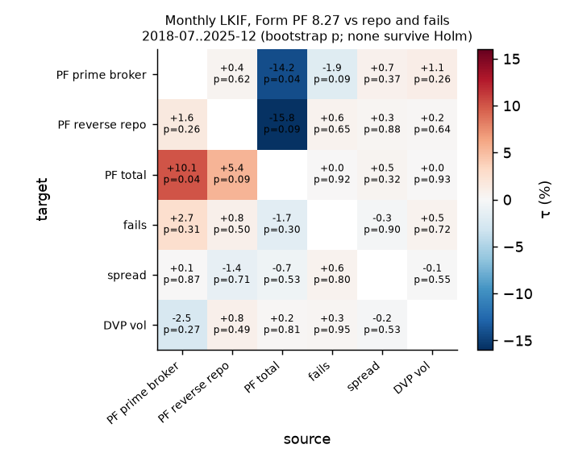

Liang–Kleeman information flow (LKIF) · from climate and ocean dynamics (causal information flow between time series)
Which funding series move each other's uncertainty, and which way?
What it isMeasures how much one series' past changes the uncertainty of another's next move, with size, sign, and exact zero without dynamical link.
VerdictInteresting. Home field: contested (sound for linear systems; independent tests thin; disputed for nonlinear systems).
Top pickMath (effort M): Sandwich (HAC, delta-method) inference for information flow, carrying covariance uncertainty, so short rolling and storm windows get right-sized tests.
DataPublic aggregates: NY Fed fails, OFR repo, CFTC TFF, FRED VIX (weekly 2018–2025); SEC Form PF 8.27 monthly; descriptive
The one picture
Usual tool: Granger links (Holm 5%), no size or sign

LKIF: signed share of uncertainty, calibrated bootstrap
👍 go ahead · 👎 drop · or just comment what you think
Notation
Symbol
Meaning
Here
\(X_t\in\mathbb R^d\)
state of a stochastic dynamical system, sampled at step \(\Delta t\)
\(d=6\) weekly series, standardized: change in log financing fails, change in the DVP − tri-party overnight spread, change in log DVP and tri-party volume, change in leveraged-fund UST net short, change in VIX; \(n=399\) weeks
\(A=(a_{ij})\)
drift matrix of the linear model \(dX=(f+AX)\,dt+B\,dW\)
estimated by least squares of the Euler difference \((X_{t+1}-X_t)/\Delta t\) on \(X_t\) (equivalently a VAR(1): \(a_{ij}\) = VAR coefficient, \(a_{ii}\) = VAR coefficient − 1)
\(C=(C_{ij})\)
sample covariance of \(X_t\)
same-week covariance of the six series
\(T_{j\to i}\)
information flow: rate at which \(X_j\) changes the marginal (Shannon) entropy of \(X_i\), nats per step
"how much the spread moves the uncertainty of next week's fails"
\(Z_i,\ \tau_{j\to i}\)
normalizer and normalized flow \(\tau=T/Z_i\in[-1,1]\)
share of fails' entropy budget that comes from the spread
sign of \(T\)
\(T>0\): \(X_j\) makes \(X_i\) less predictable; \(T<0\): it damps \(X_i\)
red vs blue arrows on the chart
Assumptions
The series come from a (locally) stationary linear stochastic system with additive noise; the closed form below is the maximum-likelihood estimator only under that model (Liang 2014, Theorem 5 as restated in Liang 2021).
All relevant drivers are in \(X\) (the multivariate version conditions on the other \(d-2\) series, so a common driver inside \(X\), such as VIX, is handled; one outside \(X\) is not).
One-step (here one-week) time scale; Euler forward differencing with step 1 (the package default, recommended unless the system is chaotic and deterministic).
For the package's significance test: Gaussian, homoskedastic residuals and zero-mean regressors (see the null section; our data break the first two).
The estimator
For a linear system, the information flow has an exact population form (Liang 2021, eq. 4) and a plug-in estimator:
with \(C_{i,dj}\) the covariance between \(X_i\) and the Euler difference of \(X_j\).
Why it works, step by step
Step 1 · entropy of a Gaussian marginalFor \(X_i\sim N(\mu_i,\sigma_{ii})\), \(H_i=\tfrac12\log(2\pi e\,\sigma_{ii})\), so \(dH_i/dt=\dot\sigma_{ii}/(2\sigma_{ii})\). Under \(dX=(f+AX)dt+BdW\) the covariance evolves as \(\dot\Sigma=A\Sigma+\Sigma A^{\top}+BB^{\top}\), whose \((i,i)\) entry is \(\dot\sigma_{ii}=2\sum_k a_{ik}\sigma_{ik}+g_{ii}\). Therefore
$$\frac{dH_i}{dt}=\underbrace{a_{ii}}_{\text{self}}+\sum_{j\neq i}\underbrace{a_{ij}\frac{\sigma_{ij}}{\sigma_{ii}}}_{T_{j\to i}}+\underbrace{\frac{g_{ii}}{2\sigma_{ii}}}_{\text{noise}}.$$
Each term is a separate contribution to the entropy budget of \(X_i\); \(T_{j\to i}\) is the part that exists only because \(X_j\) enters the drift of \(X_i\). This is the decomposition that the normalizer \(Z_i\) sums in absolute value.
Step 2 · nil causality and the gap to GrangerIf \(X_j\) is absent from the drift of \(X_i\), \(a_{ij}=0\) and \(T_{j\to i}=0\) exactly, whatever the correlation. Granger causality asks only whether \(a_{ij}\neq0\). LKIF asks for \(a_{ij}\,\sigma_{ij}\neq 0\): a lagged effect that leaves the same-time covariance at zero transfers no information about the marginal of \(X_i\) (toy, rotation case). Conversely, the sign of \(T\) is the sign of \(a_{ij}\sigma_{ij}\), so a positive Granger coefficient can damp uncertainty when the series co-move negatively.
Step 3 · what the package's test actually isLK_Info_flow estimates \(\widehat{\mathrm{SE}}(\widehat T_{j\to i})=\widehat{\mathrm{SE}}(\hat a_{ij})\,|C_{ij}/C_{ii}|\), treating \(C\) as known. The ratio \(C_{ij}/C_{ii}\) cancels in \(z=\widehat T/\widehat{\mathrm{SE}}\), so \(z=\hat a_{ij}/\widehat{\mathrm{SE}}(\hat a_{ij})\): the lag-1 VAR \(t\)-statistic, i.e. the Granger test. On our standardized data the two agree to 1.5×10−5 (computed; the gap is a degrees-of-freedom convention). Significance in LKIF therefore inherits every assumption of the Granger \(t\)-test; what LKIF adds is the size and the sign.
The null and inference
Package test: \(z\) as above, two-sided normal p. It uses the uncentered moment matrix of \(X\) for \(\widehat{\mathrm{SE}}(\hat a)\) although the regression has a constant; on the Liang (2021) network with its nonzero means this gives 6.6% false alarms at 5% (7.0% with means ×10; 4.9% with zero means; correct OLS \(t\): 4.8%) — computed, 300 runs each. We standardize, so this bias does not touch our numbers.
Circular-shift surrogate (shift the source series): invalid here, because shifting kills \(C_{ij}\) and therefore \(T\) even when \(a_{ij}=0\). On our data it raises false alarms to 39–67% (finding 1).
What we use: an edge-zeroed model bootstrap. Fit the VAR(1), set \(a_{ij}=0\), regenerate the series from block-resampled residual rows (stationary bootstrap, mean block 8, which keeps fat tails, volatility clusters and same-week residual correlation), recompute \(|\widehat T_{j\to i}|\); 999 replicates per edge; Holm over the 30 directed edges.
Toy example (computed by cards/_toys/toys.py)
Two series, \(X_{t+1}=AX_t+e_t\) with \(A=\begin{pmatrix}0.5&0.3\\0&0.5\end{pmatrix}\) and independent unit noise: \(x_2\) drives \(x_1\). Stationary covariance \(\sigma_{11}=1.6\), \(\sigma_{12}=0.2667\), \(\sigma_{22}=1.3333\). Then \(T_{2\to1}=0.3\times0.2667/1.6=0.05\) nats per step and \(T_{1\to2}=0\) (nil causality). The self term is \(a_{11}-1=-0.5\) and the noise term \(1/(2\times1.6)=0.3125\), so \(Z_1=0.8625\) and \(\tau_{2\to1}=0.058\): \(x_2\) accounts for 5.8% of \(x_1\)'s entropy budget. Change \(A\) to the rotation \(\begin{pmatrix}0.5&0.3\\-0.3&0.5\end{pmatrix}\): now \(\sigma_{12}=0\), so \(T_{2\to1}=0\) although the Granger coefficient is 0.3.
How it differs from the standard tool. Granger causality (and transfer entropy, its information-theoretic twin for Gaussian data) asks whether the past of \(X_j\) improves the prediction of \(X_i\): a yes/no on \(a_{ij}\). LKIF is derived from the time evolution of the entropy of \(X_i\) under the system's own dynamics. It returns a magnitude on a common scale (share of the target's entropy budget), a sign (destabilizing or stabilizing), and zero when the lagged effect does not alter the target's uncertainty. Its significance test, in the reference implementation, is the Granger \(t\)-test; on our data both need a calibrated bootstrap.
Followed: Liang (2021), "Normalized multivariate time series causality analysis and causal graph reconstruction", Entropy 23:679 (open text read on PMC: Theorems 4–5, eqs. 4–5 and 14–20, Section 5.1); Liang (2014), Phys. Rev. E 90:052150 and (2015) 92:022126 (cited by that paper and by the package; not read). Package: LK_Info_flow 3.1.2.1 (Rong & Liang; multi_causality_est.py read line by line). Step 1 is our own short derivation of eq. 4 from the Gaussian covariance equation; it matches the paper's statement. Toy: cards/_toys/toys.py.
What we found
False-alarm rate when the true link is zero

Home-field check: Liang (2021) network, printed vs ours

Finding 1
The usual tests overstate weekly links: 14–20% false alarms at 5%.
Simulating our six weekly series from the fitted VAR(1) with one link set to zero and block-resampled residuals (fat tails and volatility clusters kept), the package's test rejects the true zero 14.5% of the time for spread → fails and 20.3% for fails → spread (400 simulations each); a circular-shift surrogate rejects 39–67% on all four edges tested; HC3 standard errors give 4.5% and 9.5%. Positioning → fails and DVP → fails are about right (3.5%, 4.3%).
Computed. The package's z equals the lag-1 VAR t-statistic (largest gap 1.5×10⁻⁵ on our data), so this is also the Granger test's size here. The shift surrogate fails because shifting the source removes the same-week covariance that the flow is proportional to.
Finding 2
Spread moves raise fails' uncertainty but damp DVP volume's.
Six-variable LKIF, 399 weeks (2018-05-16 to 2025-12-31), conditional on volumes, positioning and VIX: spread → fails τ = +1.7% of fails' entropy budget (calibrated bootstrap p = 0.033); spread → DVP volume τ = −3.6% (p = 0.013); VIX → fails +0.5% (p = 0.076). No edge survives Holm over 30 (smallest adjusted p 0.39). VAR(BIC = 1) Granger, Holm: both spread links significant (p < 0.0001 and 0.0014), with no size or sign.
Sign = sign of (lag coefficient × same-week covariance): positive makes the target less predictable. Under the pre-registered shift-surrogate rule three edges would have passed Holm; that rule was dropped after the size check (labelled on the On-our-data tab).
Finding 3
Positioning → fails: Granger says yes, information flow says about zero.
Leveraged-fund net short → fails: VAR Granger p = 0.012 (pairwise 0.0014), but the same-week correlation is 0.02, so the flow is τ = −0.10% (bootstrap p = 0.26). Fails → spread, the direction convergent cross mapping preferred on 11-15: τ = −0.01% (p = 0.94).
Nil-causality in action: a lagged coefficient that does not change the target's uncertainty carries no flow. The 11-17 ECA result (unwind weeks before fails spikes) is about tails, which a linear flow cannot see; the two are not in conflict.
Rolling 104-week τ

Monthly Form PF vs repo and fails

Finding 4
The spread → fails flow flips sign after mid-2024.
τ(spread → fails) = +1.0% in 2018-05..2022-02 and +1.8% in 2022-03..2025-12 (bootstrap p 0.12 and 0.11), then −1.1% in 2024-07..2026-09 (five series without positioning; p = 0.094; +3.6% in 2022-03..2024-06). The rolling 104-week chart shows the turn.
Not significant on its own; the timing matches the mid-2025 switch-off of the fails–spread coupling seen by CRQA on 11-14.
Finding 5
Monthly Form PF borrowing: no flow to or from repo or fails.
91 months (2018-06 to 2025-12), six series: every Holm-adjusted bootstrap p = 1; the smallest Form PF ↔ market p is fails → prime-broker borrowing, 0.092. The only p < 0.05 are inside Form PF (total ↔ prime broker, 0.036 and 0.042).
Consistent with the 11-14 and 11-17 nulls for prime-broker borrowing. The package's automatic lag choice crashed (type error), so only lag 1 was run.
Finding 6
As a forecasting aid it does not beat ARDL or SARIMAX.
Walk-forward one-week change in log fails, 183 weeks from 2022-07-06: ARDL own lags RMSE 0.279, + LKIF-selected parents 0.272 (−2.4%, DM p = 0.57; identical parents to Granger selection), SARIMAX(1,0,1) 0.264, random walk 0.296.
Pre-stated bar (≥ 1% gain with DM p < 0.10) failed. Expected: the selection test is the Granger test.
Who plays what
Home field (climate dynamics)
Our data (Q1, public aggregates)
Climate indices (ENSO, Arctic Oscillation, sea ice, CO2, temperature)
Weekly funding-market series: financing fails, DVP − tri-party spread, DVP and tri-party volume, leveraged-fund net short, VIX
"Does CO2 drive temperature, or the reverse?" (Stips et al., as summarized by Liang 2021)
"Do spread moves drive fails, or do fails drive the spread?" (Q1.1)
Confounder in the system (e.g. a common oscillator)
VIX as a common market driver, included so flows are conditional on it
Normalized flow \(\tau\): relative importance of each driver
Share of a series' week-to-week uncertainty that comes from another series
Monthly climate indices (Docquier et al. 2024)
Monthly SEC Form PF tab 8.27 borrowing next to monthly repo and fails (Q1.1)
Inputs and preprocessing
Weekly (Wednesday), the lab's copies of public data: NY Fed primary-dealer financing fails (UST), OFR DVP and tri-party volumes and overnight rates (DVP − tri-party spread, bp), CFTC TFF leveraged-fund net short in UST 2Y + 5Y + 10Y futures (lab copy ends 2025-12-30), FRED VIXCLS (Wednesday close). 2 missing weeks per OFR/fails series filled by one-step linear interpolation.
Transforms: weekly change in log fails, log DVP volume, log tri-party volume; weekly change in spread, net short and VIX; each standardized. 399 complete weeks, 2018-05-16 to 2025-12-31. Without positioning: 437 weeks to 2026-09-23.
Monthly: SEC Form PF tab 8.27 (prime broker, reverse repo, total borrowing; change in log), monthly mean fails (log change), spread change, DVP volume (log change); 91 months, 2018-06 to 2025-12. Form PF is dated by reference month, not publication date.
What we ran
Home field: Liang (2021) Section 5.1 six-variable network (printed \(A\) and \(\alpha\)), 20 runs each at \(b=1\) and \(b=100\) with 10,000 steps, and \(b=100\) with 500 steps; independent NumPy port vs LK_Info_flow.
Derivation check: package \(z\) vs the VAR(1) \(t\)-statistic on our data.
L1: six-variable LKIF; edge p-values from the package test, a circular-shift surrogate (4,999) and the edge-zeroed block bootstrap (999); VAR(BIC) Granger and pairwise Granger for comparison; Holm over 30 edges.
L3 (size on our data): 400 simulations per edge from the fitted VAR(1) with that edge set to zero and block-resampled residuals; rejection rates of each test at 5% (shift surrogate 200 simulations × 99 shifts; HC3 for two edges).
L2: halves split at 2022-03-02; rolling 104-week windows (step 4) on the five series without positioning; 2022-03..2024-06 vs 2024-07..2026-09.
L4: monthly six-variable LKIF with Form PF; bootstrap p (999), Holm over 30.
B: walk-forward one-week-ahead change in log fails, 183 weeks from 2022-07-06: ARDL (own two lags), ARDL + LKIF-selected parents, ARDL + Granger-selected parents (both reselected on each training window), SARIMAX(1,0,1), random walk.
Timing: our port vs a statsmodels VAR Granger loop, \(d=6,30,100\).
Pre-registered before any run on our data: runs/2026-11-20/PREREG.md. Changed after seeing L3 and labelled here: the pre-registered finding rule used the circular-shift surrogate; L3 showed that surrogate is invalid for LKIF (39–67% false alarms), so edges are judged with the edge-zeroed block bootstrap instead. Under the pre-registered rule three edges would have passed Holm.
How to read the main chart
1 Each circle is one weekly series. An arrow from A to B is a directed link from A's past to B's next move, conditional on the other four series.
2 Left (usual tool): Granger links passing Holm at 5%. An arrow says only "A helps predict B".
3 Right (LKIF): arrows with calibrated bootstrap p < 0.10. Width = |τ|, the share of B's uncertainty budget that comes from A; the label gives τ and p. Solid = p < 0.05, dashed = 0.05–0.10.
4 Red: A's moves make B less predictable. Blue: A's moves damp B. The same arrow on the left has no colour because Granger has no such notion.
5 What to look for: the two charts agree on where the arrows are, but on the right they are thin (1–4%), one is stabilizing, and none survives Holm once inference is calibrated.
What it means for a decision-maker
Weekly moves in the DVP − tri-party spread come before changes in settlement fails and in DVP repo volume, and in different ways: spread moves make the following week's fails more erratic, but make DVP volume steadier. The effects are small, a few percent of each series' week-to-week uncertainty, and with honest error bars none of them is firmly established on its own. Hedge-fund Treasury-futures positioning has a lagged statistical link to fails that a standard test flags, yet it carries essentially no information about how uncertain fails become, and on the monthly Form PF data prime-broker borrowing shows no information flow to or from repo or fails at all. The practical lesson is about tools: the usual significance tests, including the one that ships with this method, call too many links on these fat-tailed weekly series.
Where it breaks
Linear, Gaussian, one-week lag: the ECA run (11-17) found that big leveraged-fund unwind weeks precede fails spikes; that is a tail coincidence, which a linear covariance measure cannot see (here the linear flow is about zero). The two are not in conflict.
The package's asymptotic test, which equals the lag-1 Granger t-test, is oversized for links involving fails and the spread (14–20% at 5%); HC3 fixes one edge (4.5%) but not the other (9.5%).
Results are not stable over time: the spread → fails flow is positive in both halves of 2018–2025 but negative in 2024-07..2026-09 (bootstrap p 0.094); weekly windows of about two years leave little power.
Monthly Form PF analysis has only 91 points and reference-month timing.
Package maintenance: LK_Info_flow 3.1.2.1 fails on NumPy 2 (np.mat removed; patched locally with np.asmatrix); its automatic lag selection (max_lag=-1) crashes with a type error; its standard error ignores the regression constant.
What we'd do next
Math (top pick): a sandwich (heteroskedasticity- and autocorrelation-robust) variance for \(\widehat T\) and \(\widehat\tau\) that also carries the uncertainty in \(C\), checked for size against the block bootstrap.
Storm-conditioned flows for Q1.2: compare τ in the 13 pre-registered fails storms (11-18) with quiet weeks.
Pair LKIF (linear, every week) with ECA (tails only) on the same edges so the "coincidence vs causation" line from issue #70 is drawn on one page.
Contested (rigorous for linear stochastic systems and reproducible; independent tests are few, and one finds false two-way links in nonlinear deterministic systems)
What the home field has established
Origin. Liang and Kleeman derived information flow from the entropy evolution of a dynamical system (atmosphere–ocean science, mid-2000s); Liang (2014, Phys. Rev. E 90:052150) gave the two-series covariance estimator, Liang (2015, PRE 92:022126) the normalization, and Liang (2021, Entropy 23:679; open text read) the multivariate version used here. The 2021 paper states the "principle of nil causality" (zero flow when the source is absent from the target's dynamics) and shows exact recovery of a six-node VAR network with a confounder, including at noise-to-signal ratio 100 and with 500 points.
Applications claimed in the home field (as listed by Liang 2021; not read individually): El Niño–Indian Ocean Dipole, CO2 vs global temperature (Stips et al.), soil moisture–precipitation, glaciology, neuroscience.
Independent comparison. Docquier, Di Capua, Donner, Pires, Simon & Vannitsem (2024, Nonlinear Processes in Geophysics 31:115; abstract and methods read): on four artificial models and real climate indices, LKIF and PCMCI both beat correlation at removing spurious links; LKIF did better with few variables, PCMCI with many; both struggled on a nonlinear chaotic model; on real indices they disagreed on the main driver (Arctic Oscillation for LKIF, ENSO for PCMCI). They test τ with an i.i.d. bootstrap (100–1,000 draws).
Critiques. "Inadequacy of the Liang Information Flow for Causal Analysis" (Measurement 2023 conference, doi 10.23919/measurement59122.2023.10164449; abstract only): on unidirectionally coupled chaotic Rössler systems, testing significance properly detects a bidirectional link instead of the true one-way link. Liang's own papers note the closed form is the MLE only under a linear model with additive noise.
Software. Several small implementations: LK_Info_flow on PyPI (Rong & Liang, v3.1.2.1; Python, MATLAB, R folders on GitHub YinengRong/LKIF), the Belgian meteorological institute's Climdyn/Liang_Index_climdyn (bivariate and multivariate with two error options), pyLiang (bivariate), and v-TimeLKFlow (time-varying Kalman version). None has a test suite we could find; the PyPI package breaks on NumPy 2.
Our reproduction
Liang (2021) Section 5.1 network, 20 runs of 10,000 steps at \(b_{ii}=1\): the 7 designed edges are recovered in every run (no misses). Normalized flows average |τ6→2| 12.8%, |τ6→5| 12.3%, τ4→5 2.4%, τ5→4 8.5% vs the printed 13.2%, 12.5%, 2.4%, 8.8% (within the pre-set ±2 pp). Same at \(b_{ii}=100\); at 500 steps 11.3%, 11.1%, 2.4%, 8.0%.
The paper reports exact graph recovery at 90%; across our 20 runs the package's 90% rule also adds on average 3.2 spurious edges out of 23 (2.5 at \(b=100\), 2.4 at 500 steps), slightly above the 2.3 expected by chance at 10%, consistent with the uncentered standard error.
Independent NumPy port vs the package: \(T\) within 7×10−15, τ within 2×10−15, p within 2×10−13.
Verdict
The algebra is sound and reproducible, and the 2024 comparison supports it for small linear systems, which is our setting (six weekly series). But the method's significance test is the Granger \(t\)-test, independent validation is thin, and nonlinear cases are disputed. On our fat-tailed data the shipped test is oversized. Use it for size and sign of links, with a calibrated bootstrap, not as a causal verdict.
Found via. Web search, 2026-11-20 14:21 ET (query "Liang information flow causality time series normalized multivariate Python implementation") → pypi.org/project/LK-Info-Flow; github.com/YinengRong/LKIF. Novelty: exotic-transfer (climate dynamics → funding markets). Source field: atmosphere–ocean dynamics / climate science.
1 · Engineering · Effort M
A calibrated LKIF engine, LK_Info_flow as oracle
A NumPy (then Rust) LKIF core that matches the package on point estimates, fixes the uncentered standard error, runs on NumPy 2, and ships the edge-zeroed block bootstrap vectorized across all edges, so 30–100 repo segments (venue × tenor × collateral) can be screened daily.
Math sketch. One QR factorization of \([X_t,1]\) gives \(\hat A\), residuals and \((Z^\top Z)^{-1}\) for every target at once; \(\widehat T=\hat A\odot(C/\mathrm{diag}(C))\). The bootstrap reuses the factorization of the fitted VAR and simulates all \(d(d-1)\) edge-zeroed systems as a batched recursion; cost \(O(B\,d^2 n)\) instead of \(O(B\,d^4 n)\) for a per-edge refit loop.
Why it matters here. Our port already runs a 30-series graph in 1.7 ms against 4.9 s for a statsmodels Granger loop (computed, \(n=400\)), but the inference that makes it trustworthy (999 bootstraps × 30 edges) took minutes in plain Python.
Closest prior work: LK_Info_flow (Rong & Liang, PyPI 3.1.2.1); Climdyn/Liang_Index_climdyn (two error options); v-TimeLKFlow (block-bootstrap SEs for static LK, per its README). None found with a size study.
Test (pass bar set now). Point estimates within 10−12 of LK_Info_flow on our six series and the Liang (2021) network; corrected asymptotic test with size in [0.03, 0.07] on the zero-mean and nonzero-mean Liang network (300 runs); full 999-replicate bootstrap for \(d=30\), \(n=3{,}000\) in under 60 s on the box.
2 · Math · Effort M · ★ Top pick
Sandwich inference for information flow
A heteroskedasticity- and autocorrelation-robust variance for \(\widehat T_{j\to i}\) and \(\widehat\tau_{j\to i}\) that also carries the sampling error of \(C\), which the published test treats as known.
Math sketch. \(\widehat T=g(\hat a_{ij},C_{ij},C_{ii})=\hat a_{ij}C_{ij}/C_{ii}\). Stack the VAR moment conditions and the covariance moments \(m_t=(\mathrm{vech}(x_tx_t^\top)-\mathrm{vech}\,C)\) into one GMM system; with Newey–West long-run covariance \(\hat S\) and Jacobian \(\hat G\), \(\mathrm{Var}(\hat\theta)\approx\hat G^{-1}\hat S\hat G^{-\top}/n\) and the delta method gives \(\mathrm{Var}(\widehat T)\approx\nabla g^\top\mathrm{Var}(\hat\theta)\nabla g\) with \(\nabla g=(C_{ij}/C_{ii},\ \hat a_{ij}/C_{ii},\ -\hat a_{ij}C_{ij}/C_{ii}^2)\). The same route gives τ (its denominator \(Z_i\) is a sum of absolute values; use the smooth form away from zero and the bootstrap near it). A separate one-sided test asks whether \(T\) is positive (destabilizing) or negative.
Why it matters here. On our weekly data the shipped test (= Granger \(t\)) rejects true-zero links 14–20% of the time; HC3 alone leaves 9.5% on fails → spread. A test that is right-sized without a bootstrap makes LKIF usable for rolling and storm-window analysis (Q1.2, Q1.3), where windows are short.
Closest prior work: Liang (2014/2021) Fisher-information standard errors (as implemented in the package); the i.i.d. bootstrap of τ in Docquier et al. (2024); Newey & West (1987) HAC (standard). No HAC/delta-method treatment of LKIF found.
Test (pass bar set now). Size in [0.03, 0.07] on all four L3 edges under the edge-zeroed block-bootstrap null (400 simulations each), and power within 0.05 of the bootstrap test at the observed spread → fails effect. Null: the same simulations, edge set to zero.
3 · New use on our data · Effort S
Storm-window flows for Q1.2
Does the spread → fails (or fails → spread) flow change sign or size inside the 13 pre-registered fails storms (11-18 hysteresis run) compared with quiet weeks?
Math sketch. Fit the linear system on all weeks, then estimate \(T\) separately on storm weeks \(S\) and quiet weeks \(Q\) by restricting the moment sums (\(\hat a\) from the full fit, \(C\) and its derivative covariance from each subset, following the panel option in the package that allows a time-order vector with gaps). Statistic \(\Delta\tau=\tau_S-\tau_Q\); null: storm labels moved as a block in circular shifts (keeps their length and clustering), 999 shifts.
Why it matters here. Q1.2 asks whether coupling tightens in stress. The hysteresis run saw the spread peaking after fails in storms; LKIF can say whether that is information moving from fails to the spread, and in which sign.
Closest prior work: time-varying LKIF by Kalman filter (Hagan et al. 2019; Zhou et al. 2024, as described in the v-TimeLKFlow README; neither read). None found for funding markets.
Test (pass bar set now). \(|\Delta\tau|\ge 0.02\) on spread → fails or fails → spread with block-shift p < 0.05 (Holm over the two directions); otherwise reported as "no stress-specific flow".
Q1.1 · Lead/lag
Weekly, conditional on VIX, volumes and positioning: spread moves precede fails (τ +1.7%, raises fails' uncertainty; bootstrap p 0.033) and DVP volume (τ −3.6%, damps it; p 0.013); none survives Holm over 30 edges. Fails → spread: none (τ −0.01%, p 0.94), unlike the 11-15 CCM direction. Monthly Form PF borrowing: no flow to or from repo or fails (all Holm-adjusted p = 1).
Q1.3 · Regime breaks
The spread → fails flow is positive in 2018–22 and 2022–25 (τ +1.0%, +1.8%) and turns negative in 2024-07..2026-09 (−1.1%, p 0.094): the same mid-2025 change the 11-14 CRQA saw, here as a sign flip, not yet significant.
Q1.5 · Positioning vs funding
Leveraged-fund positioning → fails: Granger flags it (p = 0.012), but the information flow is about zero (τ −0.10%, bootstrap p 0.26). The 11-17 ECA tail coincidence (unwind weeks before fails spikes) is a tail effect a linear flow cannot see.
Method lesson for Q1
On these weekly series the usual tests (Granger t, the LKIF package test, shift surrogates) raise false links 14–67% of the time at 5%. Future Q1 runs should use the edge-zeroed block bootstrap. Q1.2 (stress vs quiet) and Q1.4 (mix) not answered here; Q1.2 is the New-use avenue.
Still missing: CFTC TFF after 2025-12-30 in the lab copy (public refresh); Form PF publication dates (for real-time leads). Public aggregates only; descriptive, not a trading signal. · All questions
Full tables, code and data notes: the 2026-11-20 edition · scripts in runs/2026-11-20/ · card sources in cards/lkif/.